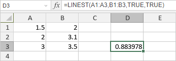

LINEST funkcija
LINEST funkcija je jedna od statističkih funkcija. Koristi se za izračunavanje statistike za liniju koristeći metodu najmanjih kvadrata kako bi se dobila prava koja najbolje odgovara vašim podacima, a zatim vraća niz koji opisuje liniju; pošto ova funkcija vraća niz vrednosti, mora se uneti kao niz formula.
Sintaksa
LINEST(known_y's, [known_x's], [const], [stats])
LINEST funkcija ima sledeće argumente:
| Argument | Opis |
|---|---|
| known_y's | Poznat opseg y vrednosti u jednačini y = mx + b. Ovo je obavezan argument. |
| known_x's | Poznat opseg x vrednosti u jednačini y = mx + b. Ovo je opcioni argument. Ako se izostavi, known_x's se pretpostavlja kao niz {1,2,3,...} sa istim brojem vrednosti kao known_y's. |
| const | Logička vrednost koja određuje da li želite da b bude jednako 0. Ovo je opcioni argument. Ako je postavljeno na TRUE ili izostavljeno, b se izračunava normalno. Ako je postavljeno na FALSE, b se postavlja na 0. |
| stats | Logička vrednost koja određuje da li želite da vratite dodatnu regresionu statistiku. Ovo je opcioni argument. Ako je postavljeno na TRUE, funkcija vraća dodatne regresione statistike. Ako je postavljeno na FALSE ili izostavljeno, funkcija ne vraća dodatne regresione statistike. |
Napomene
Napomena: ovo je niz formula. Za više informacija pročitajte članak Umetanje niz formula.
Kako primeniti LINEST funkciju.
Primeri
Prva vrednost rezultujućeg niza biće prikazana u izabranoj ćeliji.
